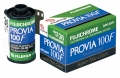
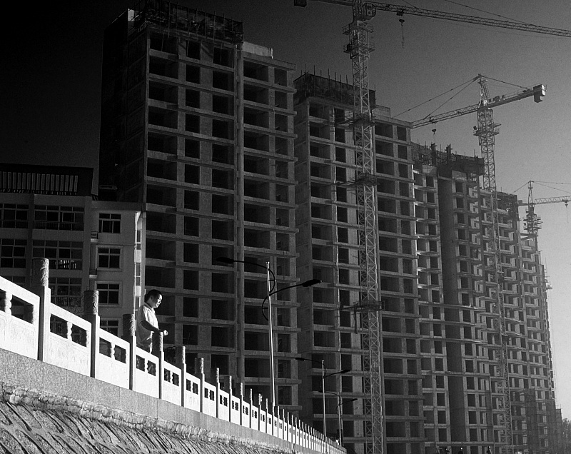
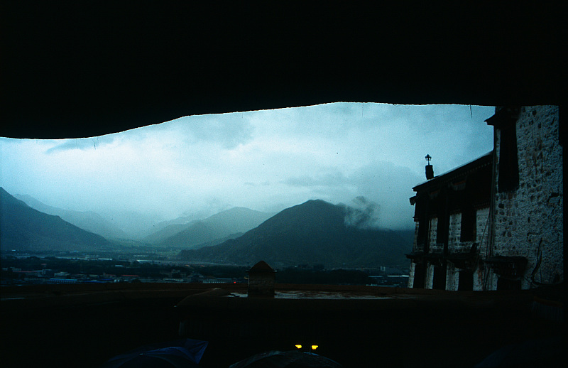
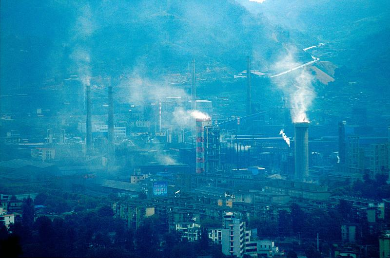

器材库 > 反转片 > Fujichrome Provia 100F Prof.

该产品没有存档的规格参数
柒郎2014-01-19 15:383 分
性价比 3.00色彩还原 3.00分辨率 3.00锐利度 3.00颗粒度 3.00反差 3.00色饱和度 3.00宽容度 3.00倒易率允许 3.00
柒郎2014-01-19 15:36
sunnykon2011-04-19 20:334.28 分
性价比 5.00色彩还原 5.00分辨率 4.00锐利度 4.00颗粒度 5.00反差 3.50色饱和度 4.00宽容度 4.00倒易率允许 4.00
月黑风高独行者2011-04-11 09:224.89 分
性价比 5.00色彩还原 5.00分辨率 5.00锐利度 5.00颗粒度 5.00反差 5.00色饱和度 4.50宽容度 5.00倒易率允许 4.50
officerdick2011-03-10 23:164.72 分
性价比 4.50色彩还原 4.50分辨率 4.50锐利度 4.50颗粒度 5.00反差 5.00色饱和度 5.00宽容度 5.00倒易率允许 4.50
siliconworm2010-10-21 20:31


siliconworm2010-10-21 20:23

siliconworm2010-10-19 13:03

肉牛2009-09-27 11:154.67 分
性价比 5.00色彩还原 4.50分辨率 5.00锐利度 4.50颗粒度 5.00反差 4.50色饱和度 4.00宽容度 5.00倒易率允许 4.50
siliconworm2009-09-26 12:414.22 分
性价比 4.00色彩还原 4.50分辨率 4.00锐利度 4.00颗粒度 5.00反差 4.50色饱和度 4.00宽容度 4.00倒易率允许 4.00
yunyunyu2005-06-07 11:354.67 分
性价比 4.00色彩还原 5.00分辨率 5.00锐利度 4.50颗粒度 5.00反差 4.50色饱和度 4.00宽容度 5.00倒易率允许 5.00
北京老盖2005-05-29 18:094.28 分
性价比 4.50色彩还原 4.50分辨率 4.50锐利度 4.50颗粒度 4.00反差 4.00色饱和度 4.50宽容度 4.00倒易率允许 4.00
banditlj2005-04-15 21:144.78 分
性价比 3.50色彩还原 5.00分辨率 5.00锐利度 5.00颗粒度 5.00反差 5.00色饱和度 4.50宽容度 5.00倒易率允许 5.00
第三类接触2005-01-27 11:294.44 分
性价比 4.50色彩还原 4.00分辨率 5.00锐利度 5.00颗粒度 5.00反差 4.00色饱和度 4.00宽容度 4.00倒易率允许 4.50
forest2005-01-25 23:334.39 分
性价比 3.00色彩还原 4.50分辨率 5.00锐利度 5.00颗粒度 5.00反差 4.50色饱和度 4.00宽容度 4.00倒易率允许 4.50
且听风吟2004-11-18 18:014.28 分
性价比 4.50色彩还原 4.50分辨率 4.50锐利度 5.00颗粒度 4.50反差 4.50色饱和度 4.50宽容度 2.50倒易率允许 4.00
horowitz2004-09-17 17:304.89 分
性价比 4.50色彩还原 5.00分辨率 5.00锐利度 5.00颗粒度 5.00反差 5.00色饱和度 4.50宽容度 5.00倒易率允许 5.00
lixrz12004-09-09 08:483.89 分
性价比 3.00色彩还原 4.50分辨率 5.00锐利度 4.00颗粒度 5.00反差 4.50色饱和度 4.00宽容度 0.50倒易率允许 4.50
谢凡2004-07-16 15:484.5 分
性价比 3.50色彩还原 4.50分辨率 5.00锐利度 5.00颗粒度 5.00反差 4.50色饱和度 4.50宽容度 4.50倒易率允许 4.00
MOT2004-06-13 10:025 分
性价比 5.00色彩还原 5.00分辨率 5.00锐利度 5.00颗粒度 5.00反差 5.00色饱和度 5.00宽容度 5.00倒易率允许 5.00
勃拉姆斯2004-05-10 19:364.61 分
性价比 3.50色彩还原 5.00分辨率 4.50锐利度 5.00颗粒度 5.00反差 4.50色饱和度 4.50宽容度 4.50倒易率允许 5.00
欧迈高2004-03-25 14:034.44 分
性价比 4.00色彩还原 4.50分辨率 4.50锐利度 4.50颗粒度 5.00反差 4.00色饱和度 4.50宽容度 4.50倒易率允许 4.50
tequilax2004-03-21 00:054.11 分
性价比 3.00色彩还原 4.50分辨率 4.50锐利度 4.50颗粒度 5.00反差 4.00色饱和度 4.00宽容度 4.00倒易率允许 3.50
Ivanzhong2004-03-19 10:564.61 分
性价比 4.50色彩还原 4.50分辨率 5.00锐利度 5.00颗粒度 5.00反差 4.50色饱和度 4.50宽容度 4.00倒易率允许 4.50
狼族盟约2004-03-09 11:434.83 分
性价比 5.00色彩还原 5.00分辨率 5.00锐利度 5.00颗粒度 5.00反差 4.50色饱和度 4.50宽容度 5.00倒易率允许 4.50
表情严重2003-12-31 12:083.94 分
性价比 4.00色彩还原 4.00分辨率 5.00锐利度 4.00颗粒度 4.50反差 4.00色饱和度 4.00宽容度 3.50倒易率允许 2.50
南瓜2003-11-24 21:215 分
性价比 5.00色彩还原 5.00分辨率 5.00锐利度 5.00颗粒度 5.00反差 5.00色饱和度 5.00宽容度 5.00倒易率允许 5.00
PowerPiggy2003-10-16 11:174.33 分
性价比 4.00色彩还原 4.00分辨率 4.50锐利度 4.00颗粒度 5.00反差 4.50色饱和度 4.50宽容度 4.00倒易率允许 4.50
WritorwithLight2003-10-06 15:574.5 分
性价比 4.00色彩还原 4.50分辨率 5.00锐利度 4.50颗粒度 5.00反差 4.00色饱和度 4.50宽容度 5.00倒易率允许 4.00
JLC2003-08-04 18:514.67 分
性价比 3.50色彩还原 4.00分辨率 5.00锐利度 5.00颗粒度 5.00反差 5.00色饱和度 5.00宽容度 5.00倒易率允许 4.50
产品图 / 样片
Fujichrome Provia 100F Prof.
评测 / 相关文章
该产品暂无存档的评测文章